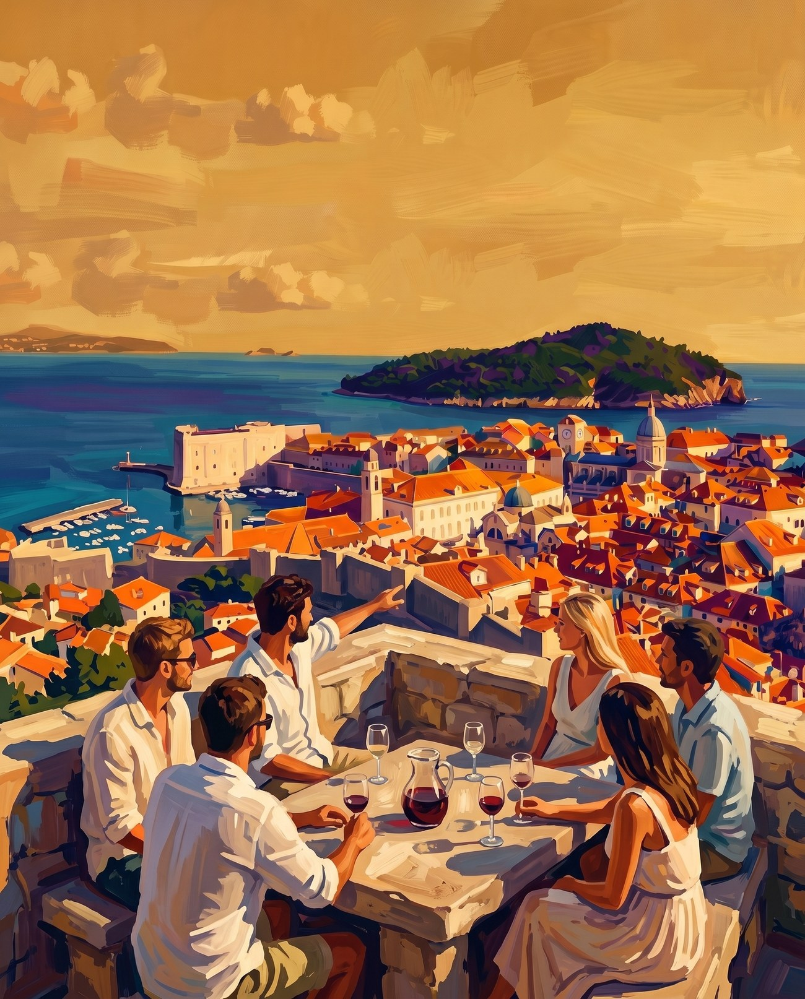
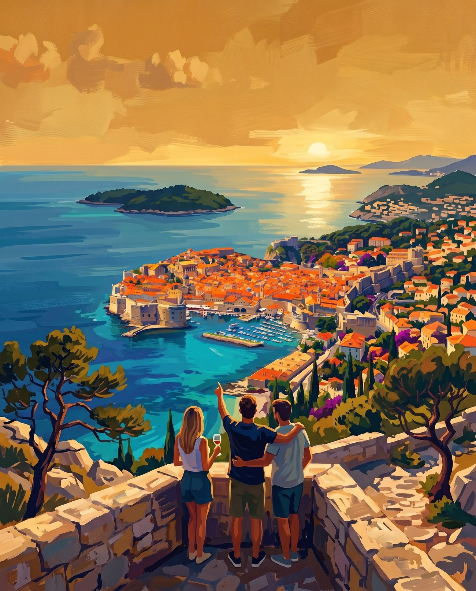
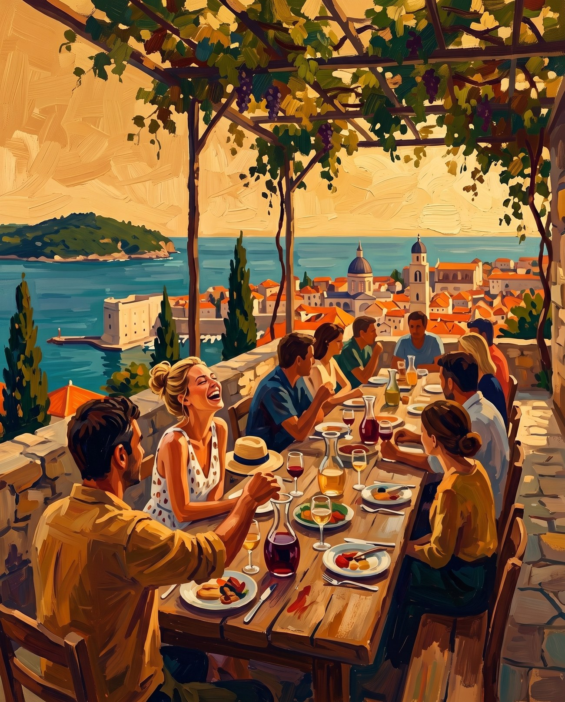

Three replacements for the friends-at-the-table image, all neo digital fauvism, generated from the existing art as style reference. Shown in the real section layout. Tell me A, B or C and I will drop it in and delete the other two. Back to the site

Every place has people who lived a whole life in it and love it more than anywhere else.
The trips you remember are the ones where you get past that. You find the real place, and the reason locals love it.
Five people around a stone table on Srđ, mid conversation, one pointing out at the city. Old town, harbour and Lokrum behind them. Closest to the current section, but the place is now visible.

Every place has people who lived a whole life in it and love it more than anywhere else.
The trips you remember are the ones where you get past that. You find the real place, and the reason locals love it.
Small figures, huge view, sun on the water. The most striking of the three and the one that shows the most of Dubrovnik. Least about the people.

Every place has people who lived a whole life in it and love it more than anywhere else.
The trips you remember are the ones where you get past that. You find the real place, and the reason locals love it.
Locals and travellers at one long table under a vine, town and sea past the wall. Warmest and most social. Has visible faces, which is what went wrong in the old image.